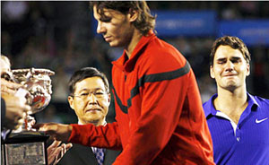
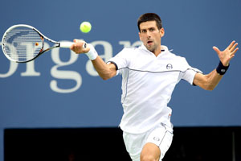
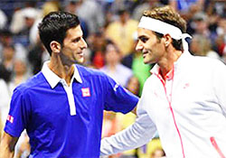
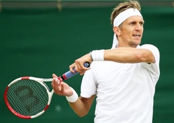
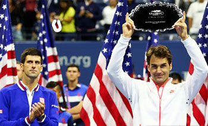

← Bài trước: The Look | 🏠 Mental Game Trang chủ | Bài tiếp: → The Mind of the Baseliner - And How to Transform It
The Loser's Edge
Thư viện kiến thức quần vợt thống nhất — Cơ bản, Phân tích kỹ thuật, Thư viện tham khảo và nhiều hơn nữa
The Loser's Edge
Kyle LaCroix

Ngay cả những tay vợt vĩ đại cũng dễ bị tổn thương về mặt cảm xúc sau những thất bại.
Sau bất kỳ thất bại nào, bất kỳ tay vợt chuyên nghiệp nghiêm túc nào cũng dễ bị tổn thương về mặt cảm xúc. Họ phải đưa ra những lựa chọn về cách nhìn nhận những gì đã xảy ra, những lựa chọn quan trọng hơn hoặc ít nhất là quan trọng như kỹ thuật hoặc bất kỳ khía cạnh nào khác của trò chơi trong sự phát triển của họ như tay vợt và như một người.
Ngay cả khi bạn thuộc nhóm ít người của những tay vợt đủ tốt để kiếm sống từ tiền thưởng giải đấu chuyên nghiệp, bạn cũng sẽ thua. Hãy xem trường hợp của ông Roger Federer.
Federer đã thua hơn 200 trận đấu chuyên nghiệp. Đó tương đương với khoảng 3 năm các trận đấu trên tour! Và Federer là một trong những tay vợt thắng nhiều nhất trong lịch sử quần vợt.
Những thất bại như vậy có thể rất đau đớn. Chúng có thể khiến những tay vợt rời khỏi tour - như đã xảy ra với Bjorn Borg sau khi lần cuối cùng của anh ấy để giành chiến thắng tại Giải Mở rộng Mỹ năm 1981 kết thúc trong một thất bại đắng cay trước John McEnroe.
Đối chiếu với Roger. Nếu bạn nhìn vào lịch sử của anh ấy, bạn có thể thấy cách anh ấy đã phát triển trong việc đối mặt với những thất bại, và điều này là một yếu tố rất lớn trong sự hiện diện và thành công liên tục của anh ấy trên tour.
Đầu tiên, hãy nghĩ lại về một số thất bại lớn nhất của anh ấy. Năm 2009, anh ấy đã khóc trong lễ trao giải sau trận chung kết Úc thua Rafael Nadal, thừa nhận, "Điều này đang giết chết tôi."

Tại sao Federer lại gọi cú trả giao bóng này là may mắn?
Năm 2011, anh ấy đã tức giận và khinh thường sau khi cú thuận tay nổi tiếng của Novak Djokovic đã đảo ngược tình thế trong trận bán kết Giải Mở rộng Mỹ. Anh ấy gọi cú trả giao bóng đó là "may mắn" và nói rằng Novak đã bỏ cuộc.
Bây giờ hãy so sánh những phản ứng này với những bình luận của anh ấy vào năm 2015 sau hai thất bại Grand Slam khác, cả hai đều thua Djokovic.
Tại Wimbledon năm nay sau trận chung kết, anh ấy nói: "Tôi rất vui khi thấy mình có thể sản xuất một màn trình diễn như tôi đã làm trong hai tuần qua. Điều đó rõ ràng cho thấy đây chỉ là một bước đệm cho nhiều điều tuyệt vời hơn trong tương lai."
Đây là những gì anh ấy nói sau trận thua Giải Mở rộng Mỹ mà anh ấy chỉ chuyển đổi được 4 trong số 23 cơ hội phá bóng: "Tôi rất vui vì tôi đã chơi tốt đến mức cho mình 23 cơ hội phá bóng. Đối với một tay vợt như Novak, để cho mình nhiều cơ hội như vậy, bạn rõ ràng đang làm nhiều điều đúng."
Đó là việc xoay chuyển suy nghĩ tiêu cực thành suy nghĩ tích cực không ngừng. Nhưng trong cả hai trường hợp, nhìn vào khuôn mặt của anh ấy khi nói những lời đó, bạn có thể thấy anh ấy hoàn toàn chân thành.
Jarkko

Khi bạn nhìn vào khuôn mặt của Roger, bạn tin anh ấy.
Federer là một người đặc biệt ở nhiều mặt, vậy đây có phải chỉ là một ví dụ khác về những gì làm cho anh ấy trở nên độc đáo không? Khi bạn đi xuống trong bảng xếp hạng chuyên nghiệp, số lần thua chỉ tăng lên. Bạn có thể là một trong 100 tay vợt hàng đầu thế giới và thua nhiều trận hơn số trận thắng trong một năm nhất định.
Vậy những tay vợt dưới cấp độ của Roger Federer thì sao?
Một vài năm trước, tôi có cơ hội tập luyện với tay vợt ATP Jarkko Nieminen từ Phần Lan. Sau đó, tôi đã hỏi Jarkko điều khó khăn nhất trong cuộc sống trên tour là gì.
Không do dự chút nào, anh ấy nói "Phần tốt nhất và xấu nhất là giống nhau - tần suất thua cuộc." Phần tốt nhất là thua cuộc? Làm sao có thể, tôi hỏi?
Jarkko giải thích rằng sự chuyển đổi khó khăn nhất mà nhiều tay vợt phải đối mặt khi đến với tour là xử lý tần suất thua cuộc của họ. Trong cấp độ thiếu niên, trong trường hợp của anh ấy, có thể tuần trôi qua mà không thua trận nào.
Năm 1999, anh ấy giành được chức vô địch Giải Mở rộng Mỹ thiếu niên. Các fan, nhà báo và huấn luyện viên gọi anh ấy là ngôi sao tiếp theo. Điều này mặc dù thực tế là sự thống trị thiếu niên không phải là một dự đoán chính xác cho sự nổi tiếng trên tour.
Sự nghiệp 15 năm của Nieminen trên tour là một thành công theo bất kỳ tiêu chuẩn nào hợp lý. Anh ấy đã vào tứ kết của 3 trong số 4 Grand Slam.

Tập luyện với Jarrko, tôi đã học được giá trị của việc thua cuộc.
Anh ấy đã giành được nhiều danh hiệu trong cả đơn và đôi, và khoảng $8 triệu. Có bao nhiêu tay vợt sẽ giết để có được những kết quả như vậy?
Nhưng sự nghiệp đó, trái ngược với thiếu niên, bao gồm hàng chục trận thua mỗi năm. Sự sắt đá là khi anh ấy đạt được cấp độ cao hơn, những thất bại khó khăn trở nên có khả năng cao hơn khi anh ấy đối mặt với những tay vợt như Federer và Djokovic.
Theo Jarkko, những thất bại đó có lợi ích. Chúng đã giúp anh ấy phát triển như một tay vợt và một chuyên nghiệp. Chúng đã giữ anh ấy ở vị trí chân thực và dạy anh ấy tầm quan trọng của việc cải thiện.
Nhưng rất ít tay vợt thực sự học được lợi ích từ những thất bại theo cách tương tự. Nhiều người trở nên tiêu cực, kết quả của họ rơi xuống, và trong một số trường hợp, họ thậm chí còn từ bỏ quần vợt. Điều này xảy ra ở cả cấp độ chuyên nghiệp, thiếu niên và cấp câu lạc bộ.
Vì sao lại có sự khác biệt? Tâm thế. Quần vợt là 10% về những gì xảy ra với bạn và 90% về cách bạn phản ứng với nó.
Trong tất cả các trận đấu quần vợt đã từng diễn ra, nửa số tay vợt là người thua. Vấn đề là trải nghiệm thua cuộc có thể kéo dài lâu hơn bất kỳ chiến thắng nào.
Các huấn luyện viên và huấn luyện viên quần vợt dành hàng giờ mỗi ngày để dạy học viên các cú đánh và chiến thuật, nhưng ít hoặc không có thời gian chuẩn bị cho những khoảnh khắc thất vọng không thể tránh khỏi. Có lẽ điều đó là vì họ chưa bao giờ học cách đối mặt với chúng.
Love

Bạn có thể nhìn vào những thất bại của mình theo cách mà Federer làm không?
Đó là dễ dàng để nói là đừng suy nghĩ về một thất bại. Nhưng rất khó để không làm như vậy, đặc biệt nếu những rủi ro được cảm nhận là cao. Những rủi ro đó có thể là một trận đấu giải đấu hoặc chỉ là một trận đấu hàng tuần với kẻ thù hoặc đối thủ của bạn.
Trong công việc của Jim Loehr, một trong những thành phần cơ bản là học cách hiểu quy trình, học cách yêu cuộc chiến, học cách tập trung vào niềm vui của việc chơi trò chơi hơn là kết quả. (Nhấp vào đây.)
Các câu hỏi quan trọng để đặt ra sau một thất bại là: Tôi đã làm gì tốt? Những cơ hội của tôi ở đâu? Mục tiêu là giữ sự hào hứng về việc cải thiện và cải thiện khả năng kiểm soát quá trình của mình trong tương lai.
Những tay vợt vĩ đại có khả năng kỳ lạ để sử dụng những thất bại như một bungee, không phải là một sự lùi bước. Việc chụp nhanh những gì đã xảy ra cho phép họ tập luyện và tập trung vào những gì cần thiết để thực hiện hiệu quả hơn trong tương lai.
Tối ưu
Khi các tay vợt thi đấu, sẽ có những khoảnh khắc quan trọng quyết định kết quả của một trận đấu nhất định, hoặc có tiềm năng để làm như vậy. Khi nhiều tay vợt không tận dụng được chúng, họ thường than thở về những gì có thể xảy ra.
Nếu bạn bị vượt trội ở mọi lĩnh vực, thì đối thủ của bạn quá tốt. Nhưng về trò chơi của bạn thì sao? Bạn có đủ trung thực để giải quyết những gì bạn có thể học được không?
Lại một lần nữa, hãy lắng nghe Federer: "Thông thường, bạn học được nhiều hơn khi thua cuộc, chỉ đơn giản là bạn phân tích sâu hơn, đôi khi. Đó là nơi bạn học được nhiều về trò chơi của mình, về thái độ của mình, về thể chất của mình."
Hãy nghĩ về những gì David Sammel đã giải thích trong bài viết của anh ấy về Thang điểm tăng. (Nhấp vào đây.) Thất bại không có nghĩa là đi xuống. Chúng chỉ cho bạn thấy con đường lên thang tiếp theo.
Và một suy nghĩ cuối cùng. Hãy biết ơn. Bạn có cơ hội khác vào ngày mai để chơi quần vợt.

Kyle LaCroix là một Chuyên gia USPTA và PTR, cũng như nhận được Chứng nhận United States Center For Coaching Excellence (USCCE). Anh ấy đã được giới thiệu tại nhiều Hội nghị Công nghiệp khác nhau.
Kyle có kinh nghiệm làm việc với các tay vợt ATP/WTA và NCAA đại học ở mỗi cấp độ của sự nghiệp thi đấu của họ và ở mọi giai đoạn của sự phát triển chuyên nghiệp và cá nhân của họ. Anh ấy được công nhận rộng rãi trong ngành công nghiệp như một người đáng tin cậy, chăm chỉ, chân thành. Kyle sử dụng kỹ năng người tốt và là một người giao tiếp xuất sắc. Anh ấy hiểu các vai trò và trách nhiệm quan trọng mà các liên đoàn, huấn luyện viên và tay vợt mang theo họ hàng ngày.
Anh ấy có bằng MBA từ Đại học Michigan và bằng M.Ed trong Lãnh đạo Giáo dục từ Đại học Stanford
Để tìm hiểu thêm, vui lòng truy cập setsconsult.org
Nguồn: tennisplayer.net lưu trữ — The Losers Edge.docx (Thư viện giảng dạy của John Yandell, 2002-2022). Đã được trích xuất và hiển thị dưới dạng HTML cho Tennis Future Lab.